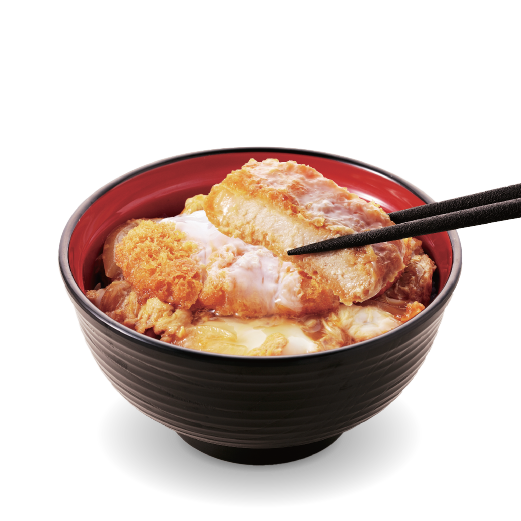
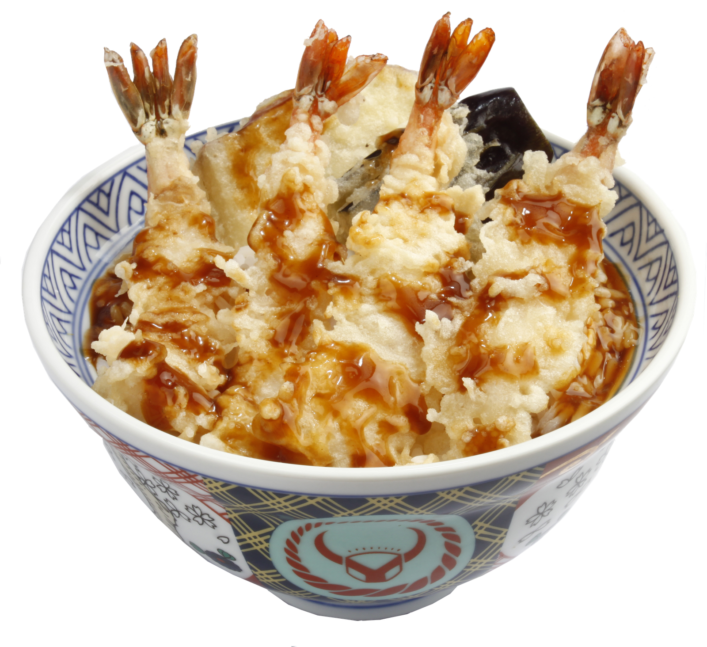
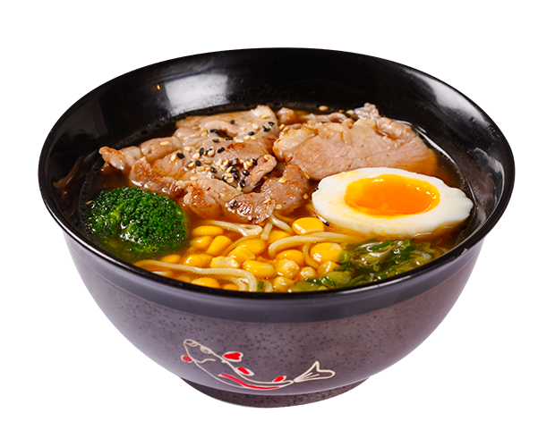

맛집 골라먹자!

since 1887 다이코쿠야
향이 깊은 튀김 맛으로 유명한
텐동의 명가
ADRESS : 1-38-10 Asakusa, Taito 111-0032, Tokyo

카네코한노스케
회전율이 빠른 도쿄 텐동맛집.
ADRESS : 1 Chome-11-15 Nihonbashimuromachi, Chuo City, Tokyo 103-0022

하시고 본점
탄탄멘이 주력인 라멘가게이다. 중국식 탄탄멘이 아닌 일본식 국물 있는 탄탄멘이다.
ADRESS : 6 Chome-3-5 Ginza, Chuo City, Tokyo 104-0061

스시잔마이 본점
100여 가지 이상의 폭넓은 메뉴를 갖춘 24시 스시 전문점
ADRESS : 4 Chome-11-9 Tsukiji, Chuo City, Tokyo 104-0045
